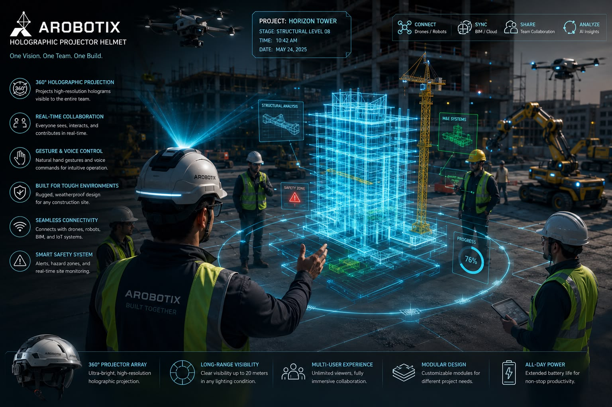
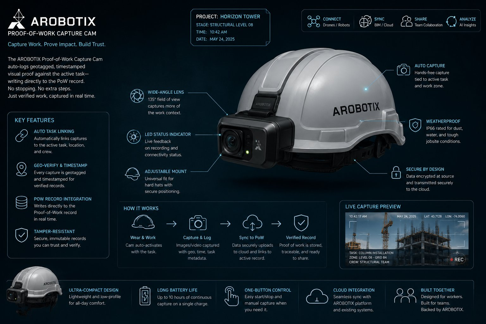
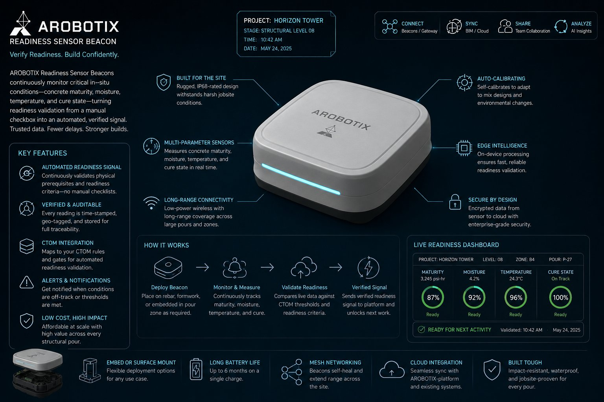
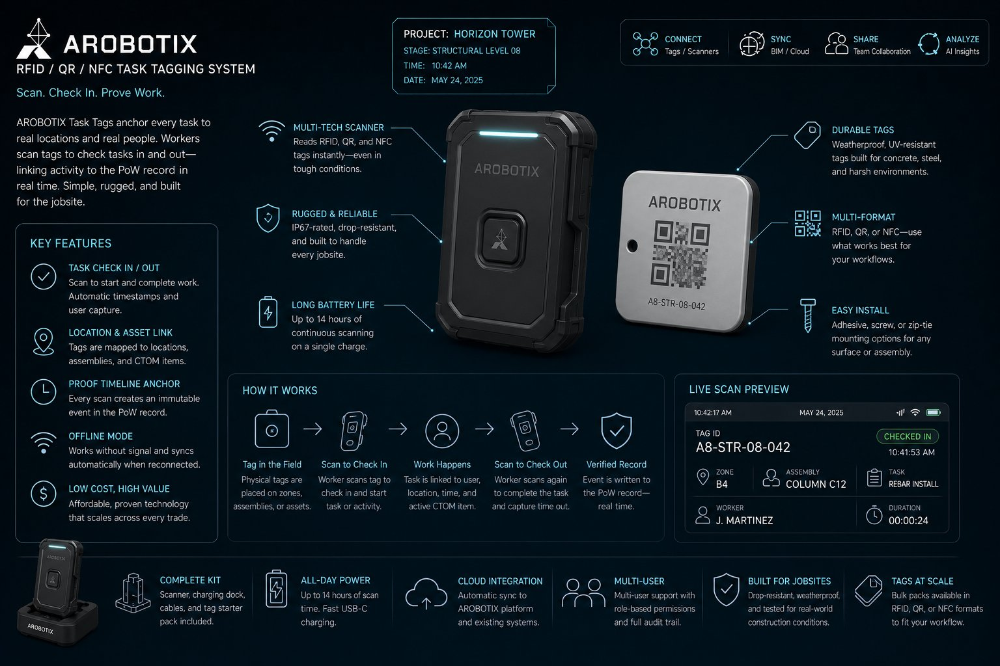
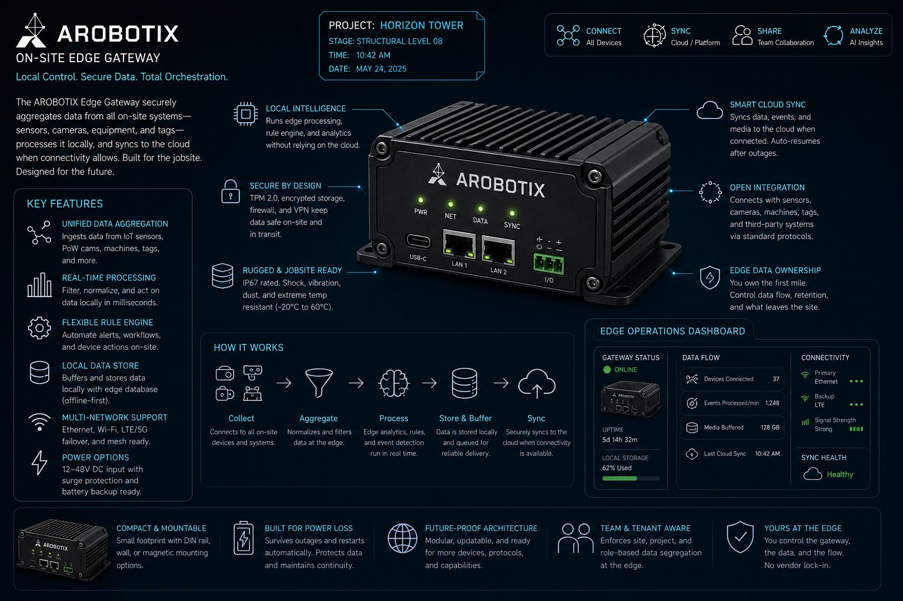

The platforms we are building, in the order they have to be built, from the BIM-to-Task Compiler and the execution data model to the Proof-of-Work record, plus the hardware on the roadmap.
AROBOTIX is an AI-native system with engineered guardrails. The wedge is a compiler that turns models into structured, verifiable work. Everything else is built on top of it.
The first critical system. It reads the digital model and compiles it into structured execution tasks, with readiness validation, sequencing, and dependency mapping built in. It turns drawings into instructions without dictating means and methods.
In the Crawl phase, classification is rule-based, which is sufficient and more defensible for the pilot than a black-box model. The output is clear, verifiable, trackable tasks.
The schema that everything else depends on. CTOM is organized by execution pattern, not trade name, so the same logic generalizes across projects. Each group carries its own readiness prerequisites, verification requirements, and dependency structure.
Getting this schema right is the difference between a system that compounds and one that breaks on the second project.
A structured, confidence-tagged record that a task was executed: the time, the machines, the conditions, and the human confirmation, all traceable. It is a defensive record and a dispute-reduction layer.
It is not automated QA signoff, legal certification, or fault assignment. Human review and final accountability stay central. When a question comes up months later, the verified record surfaces in seconds, before it becomes a claim.
Every project we run produces a dataset no competitor can replicate: the first verified, confidence-tagged record of how construction actually happens at task level. It grows with every build and gets harder to replicate with every cycle.
Features can be copied. Operational intelligence compounds. The graph powers benchmarking, risk prediction, and the pattern recognition that makes the next project's coordination smarter.
A neutral intelligence layer that delivers contextual insight across different robots and applications. It captures real-time execution data, sequences work to site conditions, and answers project questions by citing the underlying project data.
AI assists task decomposition with human validation checkpoints throughout. Every robot vendor owns its silo. No one orchestrates across all of them. That neutral position is the strategic advantage, and taking sides with any OEM would destroy it.
Planned field devices that extend the platform from the screen to the slab. Each one feeds the same execution data graph, and none is required for the software to work. We lean toward integrating proven hardware rather than building from scratch. These are exploratory roadmap items, not shipping products.
A heads-up display that overlays the compiler's task sequence, readiness status, and model geometry onto the physical work area. Most likely an integration play on existing AR hardware rather than a ground-up build, which keeps it doable.
It is the field-facing window into the software: the place where the plan meets the slab.

A small camera that auto-logs geotagged, timestamped capture against the active task and writes directly to the Proof-of-Work record. It turns "work happened" into a confidence-tagged record without anyone stopping to document.
Strategically the strongest of the five, because it directly produces our hero output.

Low-cost sensors for the physical prerequisites the CTOM already tracks: concrete maturity, moisture, temperature, and cure state. They turn readiness validation from a human checkbox into a verified signal.
A tight fit with the FOUNDATIONS and STRUCTURE field groups. Harder to build, but defensible because the data is ours.

Physical tags placed on assemblies or zones, paired with a scanner, so a worker checks a task in and out by scanning. Cheap, proven technology, easy to build, and it anchors the Proof-of-Work timeline to real locations and people.
Low differentiation on its own, but a clean, reliable data input into the record.

A ruggedized box that aggregates jobsite sensor, camera, and machine data locally, then syncs to the cloud. As sites get more automated and bandwidth gets tight, whoever owns the edge aggregation point owns the data flow.
The least flashy of the five, and arguably the most strategic for the orchestration vision.
